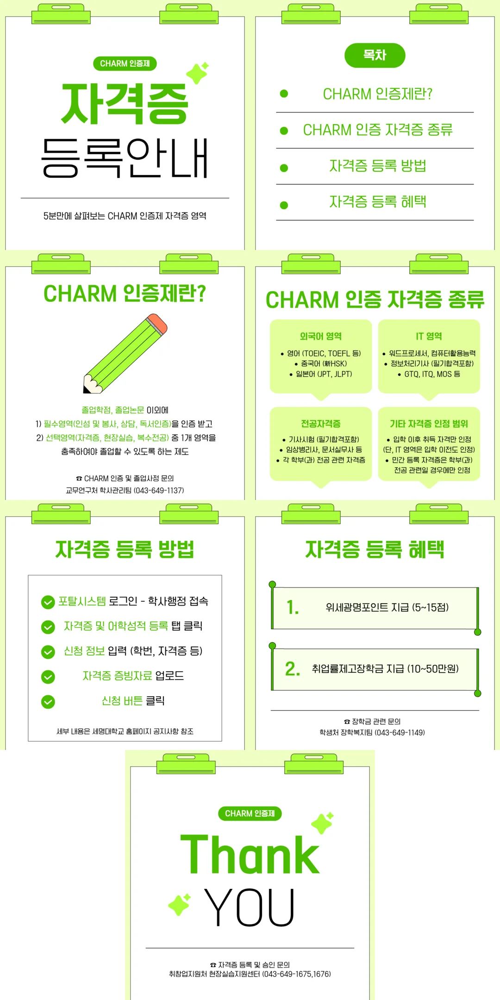
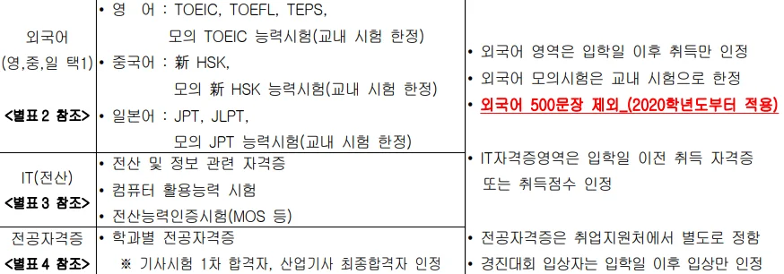
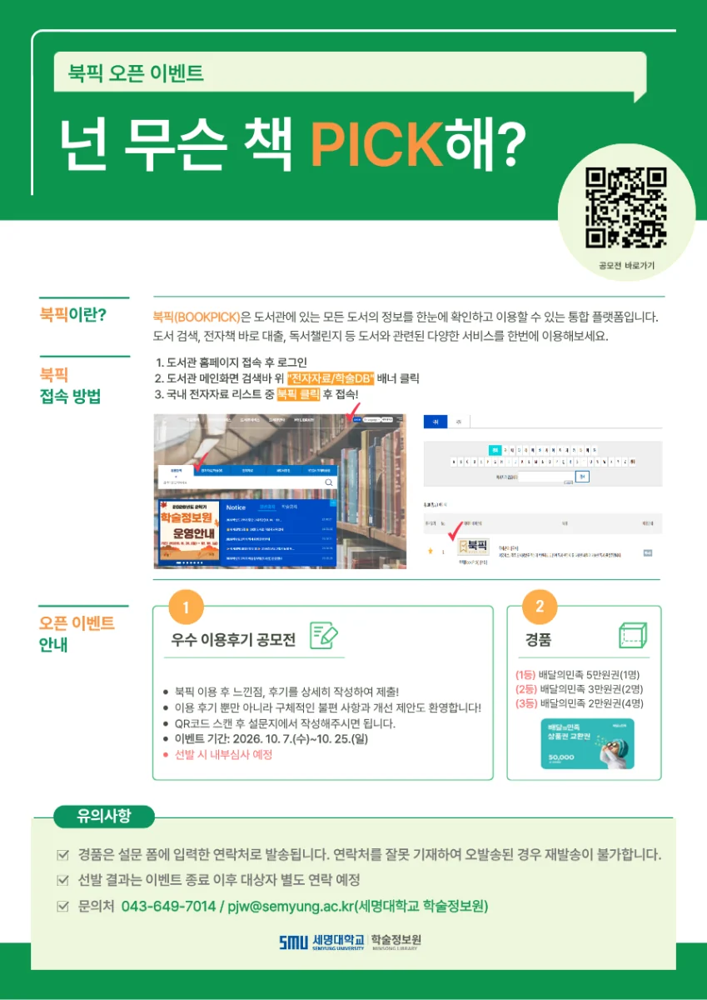

| 번호 | 제목 | 등록일 | 조회 | 첨부 |
|---|---|---|---|---|
| 공지 | 공지[스마트IT학부] 졸업요건 | 2026-10-14 | 109 | 첨부 있음 |
| 공지 | 공지[3학년] 캡스톤 디자인 중간발표회 일정 및 PPT자료 제출 안내 | 2026-10-14 | 86 | 첨부 있음 |
| 공지 | 공지2026학년도 CHARM 인증제 자격증 등록 안내 | 2026-10-14 | 100 | 첨부 있음 |
| 공지 | 공지학생 자격증 등록 및 증빙자료 양식 안내(현행 사이트, 새 창) | 2026-09-22 | 240 | 첨부 있음 |
| 603 | [스마트IT학부] 졸업요건 | 2026-10-14 | 109 | 첨부 있음 |
| 602 | [3학년] 캡스톤 디자인 중간발표회 일정 및 PPT자료 제출 안내 | 2026-10-14 | 86 | 첨부 있음 |
| 601 | 2026학년도 CHARM 인증제 자격증 등록 안내 | 2026-10-14 | 100 | 첨부 있음 |
| 600 | 배민 5만원 상품권 북픽 오픈 이벤트 안내 | 2026-10-14 | 29 | |
| 599 | 2026학년도 또래상담 생명지킴이 양성 교육 참여자 모집(비대면 ZOOM)(현행 사이트, 새 창) | 2026-10-14 | 23 | |
| 598 | 2026학년도 4대 중독 예방 교육 참여자 모집(현행 사이트, 새 창) | 2026-10-14 | 23 | |
| 597 | 2026 세명 참(CHARM)좋은경험 인재상 공모전 안내(현행 사이트, 새 창) | 2026-10-12 | 54 | 첨부 있음 |
| 596 | [대일플_홍보] 청년고용유관기관 연계 청년고용정책 교내홍보 및 이동상담(현행 사이트, 새 창) | 2026-10-12 | 47 | |
| 595 | [학생필독] 2026학년도 2학기 중간고사 일정 안내(현행 사이트, 새 창) | 2026-10-12 | 42 | |
| 594 | 위세광명 최대 5점 DBpia Class LMS 이용자교육 참여 안내(현행 사이트, 새 창) | 2026-10-12 | 41 |
[3학년] 캡스톤 디자인 중간발표회 일정 및 PPT자료 제출 안내
첨부 파일 1개
캡스톤 디자인 중간발표회
| 일정 | 2026.12.03(목) 13:00~16:00(09:30부터 콘텐츠홀에서 발표준비 가능) |
|---|---|
| 장소 | 민송도서관 콘텐츠홀 |
사전제출자료
- 1)중간발표회 PPT 제본의뢰를 위한 최종 PPT파일과 PDF파일(변환해서)로 제출[PPT와 PDF2개 모두 제출해야함]
- 2)파일명 : 지도교수_팀명_주제
- 2)PPT파일 제출 기한 : 2026.11.24.(화) 11:00까지
- 3)PPT파일 제출처 : 00dldbwls@semyung.ac.kr
※ ppt제본 예시는 학부 사무실에 보관 중으로 학부 사무실 방문하여 확인 가능합니다.
더 자세한 중간발표회 발표순서 및 복장 등은 추후 공지 예정
[캡스톤 디자인 중간발표회]
1. 일정 : 2026.12.03(목) 13:00~16:00
(09:30부터 콘텐츠홀에서 발표준비 가능)
2. 장소 : 민송도서관 콘텐츠홀
3. 사전제출자료
1) 중간발표회 PPT 제본의뢰를 위한 최종 PPT파일과 PDF파일(변환해서)로 제출[PPT와 PDF2개 모두 제출해야함]
2) 파일명 : 지도교수_팀명_주제
2) PPT파일 제출 기한 : 2026.11.24.(화) 11:00까지
3) PPT파일 제출처 : 00dldbwls@semyung.ac.kr
※ ppt제본 예시는 학부 사무실에 보관 중으로 학부 사무실 방문하여 확인 가능합니다.
더 자세한 중간발표회 발표순서 및 복장 등은 추후 공지 예정
[스마트IT학부] 졸업요건
2026학년도 CHARM 인증제 자격증 등록 안내
첨부 파일 3개

안녕하세요, 현장실습지원센터입니다.
CHARM인증 선택영역 인증 및 위세광명 포인트 관련하여 자격증 등록 방법 안내드립니다.

※ 기타 인증 가능한 자격증 목록은 2026학년도 CHARM인증제 세부 시행 계획(현행 사이트, 새 창) 확인 부탁드립니다.
자격증 번호 및 자격증별 증빙자료 예시 첨부하여 드리오니 등록 시 확인 부탁드리며,
원활한 졸업사정을 위해 졸업 직전 학기 내에 자격증 신청 및 승인까지 완료하여 주시면 감사하겠습니다.
※ 자격증 승인이 완료되어도 즉시 CHARM인증 화면에 반영되지 않으며, 자격증 졸업사정 반영 여부는 학사관리팀(043-649-1137)으로 문의하여 주시기 바랍니다.
※ 1개의 자격증으로 위세광명장학금과 취업률제고장학금을 동시에 신청할 수 없으니 유의해주시기 바랍니다. (중복신청불가)
※ 증빙자료 미흡 시 자격증 접수취소/삭제 처리됩니다.
☎ 문의: 043-649-1675,1676 (현장실습지원센터)
배민 5만원 상품권 북픽 오픈 이벤트 안내
